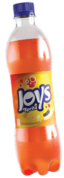
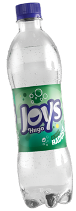
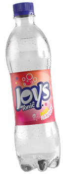
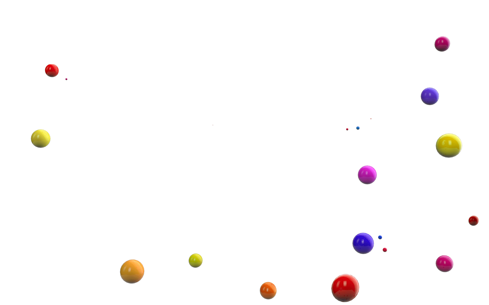

Joys Spritz
Joys Spritz je bezalkoholno gazirano osvježavajuće piće koje okusom podsjeća na aperol koktel. Sadrži aromu kore narandže s dodatkom arome bijelog prosecco vina.
 Osnovni sastojci: voda, šećer, arome biljnih sokova zajedno sa sokom kore od narandže. Suha tvar (min. 8 %). Energetska vrijednost 39 kcal = 164 kJ.
Osnovni sastojci: voda, šećer, arome biljnih sokova zajedno sa sokom kore od narandže. Suha tvar (min. 8 %). Energetska vrijednost 39 kcal = 164 kJ.




Sarajevska pivara d.d. / Franjevačka 15, 71000 Sarajevo / +387 33 491 100 / info@pivara.ba / Privacy policy